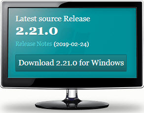
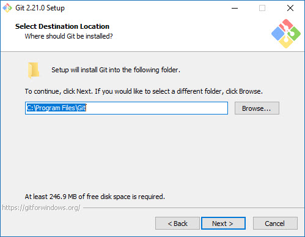
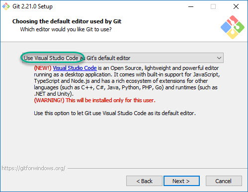
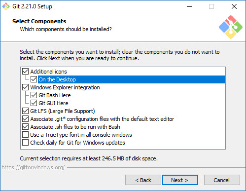
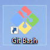
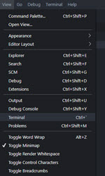
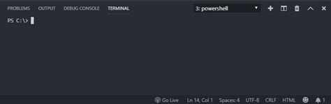
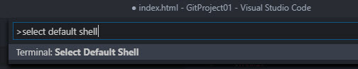
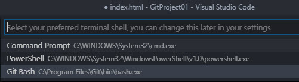
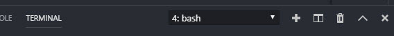

Installation of Local Git Repository

run the installation file and follow the below images



continue with the default options and when done, close the installer, the icon of the bash will appear on your desktop

In the rest of this tutorial, we will use VScode to run all git commands
preparing VScode to run with Git
1. Open and arrange the console window
Open the terminal window from the view menu or with CTRL+`

The console window will open in the bottom right corner of the VScode window

If you are running a Windows OS and the console is opened with CMD or PS
2. Add Git Bash to the console window
change the default console editor by pressing F1 and typing as 'select default shell'

From the list select Git Bash

Back in the console window, press the + sign near the window name,
The new console window will open with bash.

You are now ready to start working with Git in VScode
back to main page